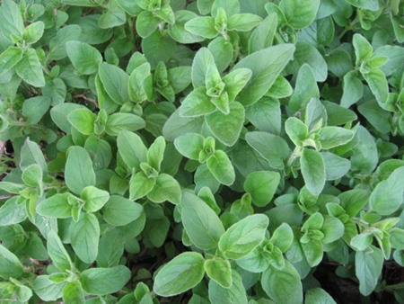

Welcome to Natural - It's Picked
Season's Specials!!!!
| Special Item | Special Price |
|---|
| Immunity Build Oil | R200 each |
| Flu Attack Oil | R200 each |
| Breath Easy | R200 each |
| Sensual Oil | R200 each |
| Cayenne Pepper Cream | R300 each |
| Germ Away Soap | R25 each |
Prices exclude postage
March 23, 2014
=======
-->
January 28, 2014
By Belinda Addinall
Our Company is dedicated to deliver 100% Natural
products to our Clients. From a fragrant bath salt to
help with a stuffy nose to the pain felt from a sore
back.
Natural Remedies have been passed on from Generation
to Generation. Herbs and Spices combined to create
powerful oils and creams.
All Natural, mostly homegrown. If not sourced from
the best suppliers word wide. Your skin is your biggest
organ exposed to the elements. It deserves your care,
doesn't it?
We are located in Boksburg Province: Gauteng, South Africa,
but can supply worldwide.
Our phone number is
- 0760355228 Local calls
- +27760355228 International calls
Contact
And Why?
"Whatever can heal you can also harm you" a
Very true saying. Most medicine have side effects and
nasty ones at that.
Contact
Various Oils
A brief description of the various oils we use in the
manufacture of our product, and the generally accepted
benefits of the oils.
Star Anise
Star Anise Oil Uses: Rheumatism, bronchitis, coughing,
colic, indigestion/cramping, colds, flu.
Basil Oil
Basil Oil Uses: Bronchitis, colds, coughs, exhaustion,
flatulence, flu, gout, insect bites, insect repellent,
muscle aches, rheumatism, sinusitis.
Citronella Oil
Citronella Oil Uses: Excessive perspiration, fatigue,
headache, insect repellant, oily skin.
Dill Oil
Dill Oil Uses: Amenorrhea, flatulence, griping
pains.
Eucalyptus Oil
Eucalyptus Oil Uses: Arthritis, bronchitis, catarh,
cold sores, colds, coughing, fever, flu, poor
circulation, sinusitis.
Frankincense Oil

Frankincense Oil Uses: Anxiety, asthma, bronchitis,
extreme coughing, scars, stress, stretch marks.
Ginger Oil
Ginger Oil Uses: Aching muscles, arthritis, nausea,
poor circulation.
Helichysum Oil
Helichrysum Oil Uses: Abscesses, acne, boils, burns,
cuts, dermatitis, eczema, irritated skin, wounds.
Jasmine Oil
Jasmine Absolute Uses: Depression, dry skin,
exhaustion, labor pains, sensitive skin.
Kanuka Oil
Kanuka Oil Uses: (Uses listed are those for Common Tea
Tree): Acne, athlete's foot, candida, chicken pox,
cold sores, colds, corns, cuts, flu, insect bites,
itching, migraine, oily skin, ringworm, sinusitis, sores,
spots, urethritis, warts, whooping cough.
Lavender Oil

Lavender Oil Uses: Acne, allergies, anxiety, asthma,
athlete's foot, bruises, burns, chicken pox, colic,
cuts, cystitis, depression, dermatitis, dysmenorrhea,
earache, flatulence, headache, hypertension, insect
bites, insect repellant, itching, labor pains, migrane,
oily skin, rheumatism, scabies, scars, sores, sprains,
strains, stress, stretch marks, vertigo, whooping
cough.
Myrrh Oil
Myrrh Oil Uses: Amenorrhea, athlete's foot,
bronchitis, chapped skin, dysmenorrhea, gums, halitosis,
hemorrhoids, itching, mouth, ringworm, toothache.
Nutmeg Oil
Nutmeg Oil Uses: Arthritis, constipation, fatigue,
muscle aches, nausea, neralgia, poor circulation,
rheumatism, slow digestion.
Oregano Oil

Oregano Oil Uses: Coughs, digestion.
Peppermint Oil
Peppermint Oil Uses: Asthma, colic, exhaustion, fever,
flatulence, headache, nausea, scabies, sinusitis,
vertigo.
Rose Oil
Rose Oil Uses: Depression, eczema, frigidity, mature
skin, menopause, stress.
Sandalwood Oil
Sandalwood Oil Uses: Bronchitis, chapped skin,
depression, dry skin, laryngitis, leucorrhea, oily skin,
scars, sensitive skin, stress, stretch marks
Tuberose Oil
Tuberose Absolute Uses: Used primarily in perfumery
and aromatics.
Vanilla Oil
Vanilla Absolute Uses: Perfumery and enhancing the
fragrance of aromatherapy and natural skin/hair care
formulations
Ylang Ylang Oil
Ylang Ylang Possible Uses: Anxiety, depression,
frigidity, hypertension, palpitations, stress.
Contact